Effect of Defects¶
Defects¶

A chain might have defects where the site captures the walker with a rate C. We would have a master equation of this kind
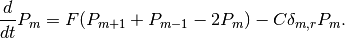
Consider an equation
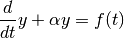
Solution to the equation when
 is a constant is
is a constant is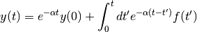
- can be time dependent, instead of the expential term, we have 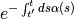 as the Green function.
Warning
Review Green function and Laplace transform.
General solution to first order differential equation is
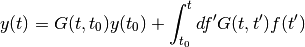
If is constant, use Laplace transform. Otherwise use Green function.
Hint
Suppose we have a first order inhomogeneous differential equation with homogeous initial condition
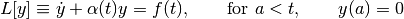
The solution to this ODE is
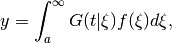
in which Green function is defined as
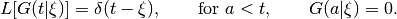
In this specific case, Green function is
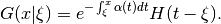
Hint
As a comparison to Green function method (which is not very helpful in 1st order ODE), general solution to first order differential equation
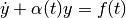
is
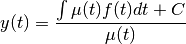
where 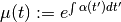.
Hint
Green function method for second order inhomogeneous equation is here in vacabulary.
Hint
Laplace transform is a transform of a function  to a function of
to a function of  ,
,
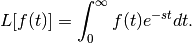
Some useful properties:
- 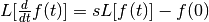;
- 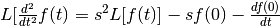;
- 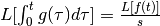;
- 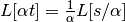;
- 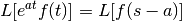;
- 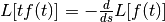.
Some useful results:
- 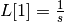;
- 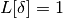;
- 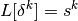;
- 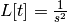;
- 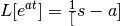.
Suppose we have a time dependent source for master equation,
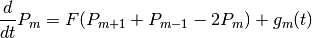
The solution to this equation is
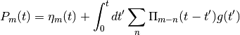
Fourier transform of this solution
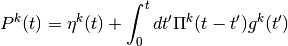
Then Laplace transform
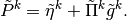
Warning
Laplace transform
Then we have in position space
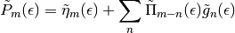
Now get back to our problem at the beginning.
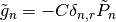
The solution becomes
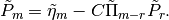
We haven’t solved it. The RHS depends on the probabillity. Notice that if we choose m=r, then
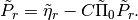
So we can write down the rth component,
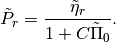
Solution to the probability is
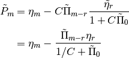
The properties of this solution
- 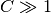, 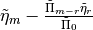.
- 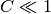, 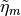.
Warning
We have to inverse using computer but why bother these transforms?
Survival Probability¶

In our example,
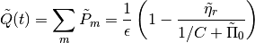
Recall that Laplace transform gives us
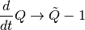
The survival probability can be written as
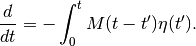
Review of Effect of Defect¶
A brief review:
Equation:
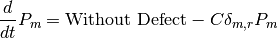
Suppose we have the propagator as 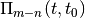. Laplace transform to solve it
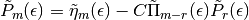
By substitution of m with r, we find out
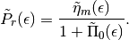
Insert this result back to the solution, we can write donw the final result.
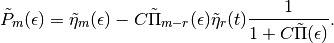
Survival probability is defined as
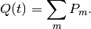
Then we can find out its Laplace transform, which is
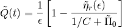
Looking through the table of Laplace transform, we know it’s a transform of the time derivative of survival probability,
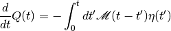
in which
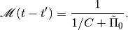
Hint
The Laplace transform of propagator is
which is actually decreasing when is a constant.
Take the limits to check the properties.
Motion limit is given by
The meaning of this is that the propagator decrease with time so fast that it becomes very small. In this limit, the survival probability is dominated by motion not the capture.
Capture limit,
In this limit, the survival probability is dominated by capture rate.
Hint
This part is excerpted from the vocabulary part.
A very nice property of Laplace transform is
which is very useful when dealing with master equations.
Two useful results are
and
where is the modified Bessel functions of the first kind. is its companion.
Using the property above, we can find out
Photosynthesis¶

Captions are here on wikipedia. Chloroplast ultrastructure: 1. outer membrane 2. intermembrane space 3. inner membrane (1+2+3: envelope) 4. stroma (aqueous fluid) 5. thylakoid lumen (inside of thylakoid) 6. thylakoid membrane 7. granum (stack of thylakoids) 8. thylakoid (lamella) 9. starch 10. ribosome 11. plastidial DNA 12. plastoglobule (drop of lipids)
{kind=link}
The obsorbed energy of photons is random walking in the chloroplast until it hit on a reaction center. Besides that, the photons can be emited after some time. So the process can be descibed with the following master equation.
where the last term is the emission term.
What experimentalists interest is the quantity called quantum yield, which is defined in the following way:

We know that without the reaction,
so
Do the integration,
The quantum yield is
The problem becomes the derivation of the two survival probabilities. However, we don’t need the inverse Laplace transform because
Let’s define the quantities without traps to be with a prime. Notice that if we define a new quantity
because if we plugin it into the master equation, we will get back to the case without emission. Then we the solution immediately.
So the survival probability with traps is
This means that
This result simplifies our calculation so much because we don’t need to calculate the survival probability in the case of traps. What we do is to use the Laplace transform of and set different  .
.
In details,
So
Then put .
Multiple Defects¶
We can solve for finite defects in principle. For example the two defects case should give us the following master equation
By using the two special cases that and , we get two equations about and ,
However, the problem gets very complicated as the number of defects becomes very large.
{kind=link}